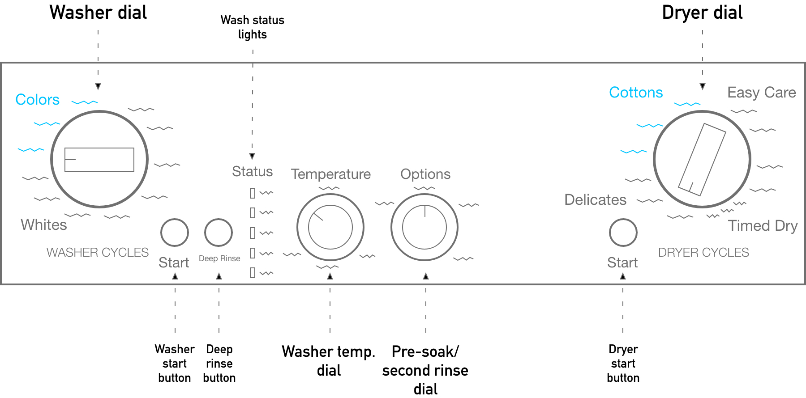
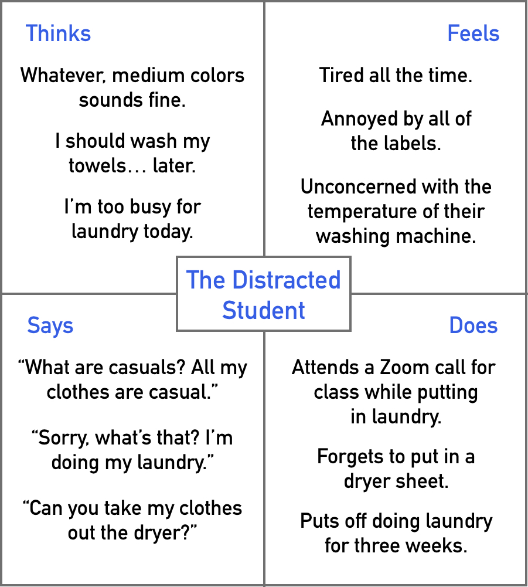
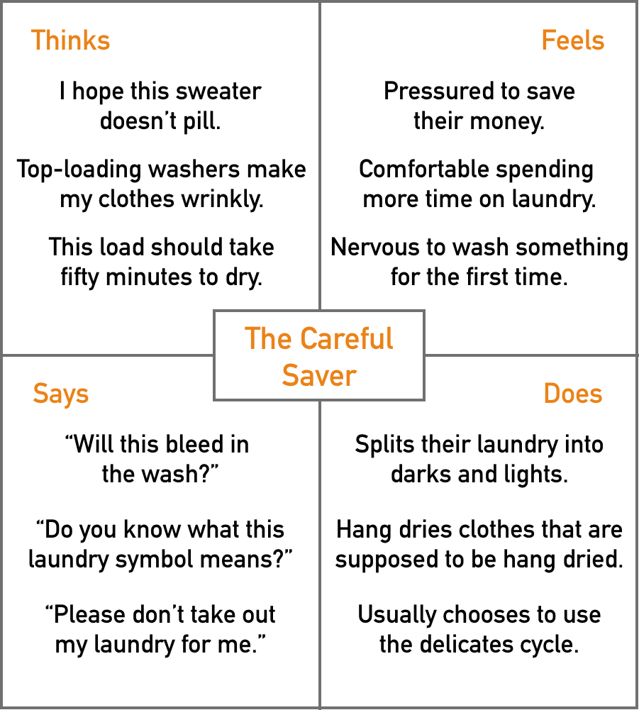
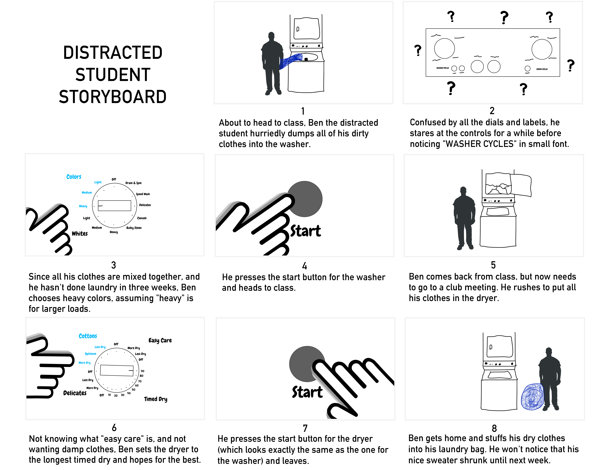

Part 1: Preparation
I first selected my interface. I chose the controls to my washer/dryer because
it's in public view, and because its confusing components would provide substantial
material for observation and interviews. Here is a sketch of the washer/dryer controls:

This interface is meant for users to control how they would like to wash and dry
their clothes. Two main dials control the mode in which the washer or dryer will
run, with additional dials to control other wash options. Three buttons (two wash,
one dry) function to start the wash/dry cycles. As the sketch shows, this interface
is packed with knobs, buttons, and many, many labels.
I also prepared a list of questions to ask the users during interviews.
- What is your first reaction to the laundry machine controls?
- In terms of settings, how would you prefer to wash and dry your clothes?
- What options do you expect to have for laundry machine controls?
- Is there anything confusing about how to operate the laundry machine?
- How do you feel about doing laundry?
Part 2: Recording Observations
Next, over a few days, I observed my roommates operating the washer/dryer
and interviewed them using the questions above.
Sophie
Observations:
- Plays Among Us on her phone while doing laundry
- Places all of her clothes into the washer
- Chooses heavy colors for wash
- Chooses optimum cottons for dry
Interview responses:
-
I don’t like the dials, but I guess it makes sense since it's like a
timer. I can’t imagine why anyone would want to know the wash status.
I've never used the options dial.
-
The settings are so arbitrary to me. I don’t have that many nice clothes
so I can just do whatever. I usually do a huge load, so that's why I chose
heavy.
-
Temperature, something about cycle length. Maybe materials or weight?
-
Yeah, the status lights make no sense. And why do I have to choose between
delicates and colors? The dryer has a lot of words. What's easy care?
What's quick fluff 10??
-
It's whatever. I don't know what I'm doing, but nothing's gone bad yet.
I like having it out of the way, I guess.
Emily
Observations:
-
"I haven’t done laundry in so long. I’m not gonna be able to fit
this all in one load… that’s so sad."
- Squints at the washer dial for a while
- Chooses medium colors for first batch
- Uses same setting for second batch
- “Could I get my towels and put them in here? Yes. Will I? No.”
-
Chooses 70 min timed dry for all clothes, awkwardly twisting her hand
to reach it
Interview responses:
-
The first time I did laundry here, I thought that the washer side was
on the dryer side. I kept on pressed the wrong start button. But now
that I understand how it works, I just ignore most of the controls and
do the same thing every time.
-
I wash all my clothes together. As long as it's not hot water, I'm fine.
I then machine dry everything except for jeans and jackets. I'll usually
dry on low, but I don’t know if it’s available on this one.
-
Temperature setting, intensity for the washer. I guess whites and colors,
but I always use colors.
-
Well, both the start buttons look the same, and the washer/dryer labels
are smaller than the settings around the wheel.
-
It’s kind of a hassle, especially when I'm busy. I’m also just lazy.
Michael
Observations:
- Sorts through laundry basket and places specific items into washer.
- Looks through clothes inside washer, then selects delicates.
- Switches washer temperature to cold.
- Washes second batch (mostly sheets, some clothes) on heavy colors cycle
- Dries all laundry at once on delicates
Interview responses:
-
It’s a little busy. I’m not really sure how to use everything, so I wish
the labels were clearer.
-
I like to use delicate cycles for most of my clothes because I want to
maintain them. I like low heat for the dryer. I usually split my clothes
into lights and darks to prevent stains, but I also always use cold water
for that.
-
Temperature for both washer and dryer, something about how intense it
washes, especially since it’s a top loading washer.
-
I just don’t really know what it all means. Does light vs. heavy mean
intensity of the wash or amount of water used? They’re separate settings
on my laundry machine at home.
-
I like taking care of my clothes. I have some nicer items and also
some cheaper items that fall apart kind of easily, so I want to keep
them looking good. I used to hand wash some of my clothes, but I'm way
less concerned about that now.
Part 3: Personas
I then took the data I collected from my roommates and developed two personas.
The first is the Distracted Student.

The Distracted Student has a packed Google Calendar and does not have the
energy to do laundry. They just want to get it over with, but they also
will put it off for weeks on end. This persona struggles with the interface's
complexity, wanting the laundry process to be as simple and obvious as possible.
They may be so distracted that the first time they use the interface, they
can't tell which controls are for the washer and which are for the dryer.
The Distracted Student persona mainly represents Emily and Sophie. It
draws from Emily's quotes during observation and her comment on laundry being
a hassle when she's busy. It also draws from Sophie's comments on the
settings feeling arbitrary and confusing, as well as her using her phone
while doing laundry.
The second persona is the Careful Saver.

The Careful Saver wants to preserve their clothing and is willing to put
in extra effort to do so. They make calculated choices for their laundry,
which can sometimes even be a little nerve-wracking. This persona struggles
with understanding what the components of the interface do. Unlike the
Distracted Student, they want to know what the labels mean, and they prefer
having more control over the cycle settings. The Careful Saver persona mainly
represents Michael. Specifically, it
draws from her quotes during observation and her comment on laundry being
a hassle when she's busy. The persona also draws from Sophie's comments on the
settings feeling arbitrary and her using her phone while doing laundry.
Part 4: Storyboards
As the final task, I designed a storyboard for the Distracted Student persona.

Final Reflections
There are many lessons I'll take away from this project. For one, this is
the first project I've done in college for which I've had to design visuals.
I've learned some skills in Adobe XD and Plot, and I've also learned their
limitations. I've also realized that I prefer digital visuals over hand-drawn
ones, especially because my skills in hand drawing are so lacking. Lastly,
I've learned how personas and storyboards help bolster each other. I started
by developing the two personas, but by writing the narrative for the Distracted
Student storyboard, I was able to better identify and focus on the key aspects
of the persona.